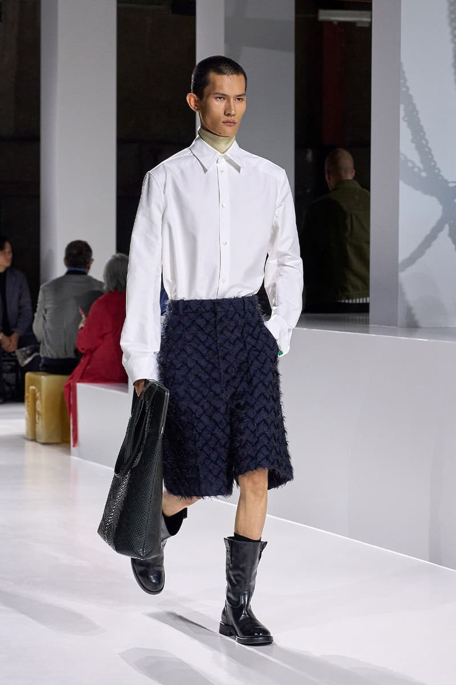

There is a particular silence that falls over a runway when a designer stops explaining and simply presents. Louise Trotter’s second collection for Bottega Veneta, eighty-one looks deep, arrived at Milan Fashion Week on 28 February 2026 in precisely that register — not a manifesto but a conversation between brutalism and sensuality, conducted almost entirely in shearling.
The appointment had been closely watched. Trotter succeeded Matthieu Blazy, whose departure for Chanel left behind a Bottega defined by material illusion — leather impersonating paper, rubber passing for suede, surfaces that questioned themselves. Her Spring/Summer 2026 debut was respectful, even reverent: a single cape, requiring four thousand hours to hand-weave from recycled fiberglass, had signalled technical ambition without disturbing the furniture. It was the work of a guest who knows not to rearrange the bookshelves. Fall/Winter 2026 is another matter entirely. This is the collection in which Trotter claimed the house.
The claim begins with volume. Oversized shearling coats — in butter yellow, cobalt, coral, and animal print — function less as garments than as statements of spatial intent. They do not drape; they occupy. One curly swing coat, assembled from more than two thousand individual shearling elements, moves with a weight that is simultaneously architectural and organic, the kind of garment that alters the geometry of a room simply by entering it. Elsewhere, silk threads are rippled to mimic the texture of curly shearling, and shearling itself is brushed until it resembles fox fur. The material vocabulary is deliberately circular: everything references everything else, and the references fold inward until texture becomes the only subject.
“Where Blazy made leather behave like something else, Trotter makes everything else behave like shearling — and in doing so, builds a Bottega that is entirely her own.”Léa Fontaine
Shaggy fiberglass appears again, this time in bubblegum pink, a colour so deliberately cheerful it borders on confrontation. Against it, Trotter sets neutral broad-shouldered suiting — clean, authoritative lines that would sit comfortably in a boardroom were it not for the faint textural disturbance running through every weave. A khaki trench arrives with an Intrecciato woven collar, the house’s signature craft deployed as accent rather than centrepiece. Black car coats, built from strips of woven leather, carry the same logic: the Bottega lexicon is present, but it has been compressed, absorbed into a larger compositional grammar.

The footwear is where Trotter’s sense of play emerges most freely. Fuzzy white heels suggest innocence; puffy green slides, finished with knotted leather details, complicate it. Spiky ballet mules — an oxymoron made manifest — and lace-up dress shoes given a hairy surface treatment complete a lineup that refuses to resolve into a single mood. If the coats are monumental, the shoes are conversational, and the tension between the two scales holds the collection together.
Trotter has spoken of Maria Callas and Pier Paolo Pasolini as guiding presences — feminine and masculine poles whose gravitational pull shapes the collection without determining it. The reference is characteristically literary for a designer who arrived at this position by an unconventional path. Her years at Lacoste, a house built on sportswear and democratic style, would seem poor preparation for the rarefied world of Italian luxury. Yet it is precisely that distance that lends her work its clarity. She is not performing Bottega from memory; she is reading the house with fresh eyes and deciding, garment by garment, what to keep.
What she keeps, above all, is the commitment to material truth — but she redefines what that truth sounds like. Where Blazy’s Bottega was a house of trompe-l’oeil, Trotter’s is a house of amplification. Shearling is not disguised; it is exaggerated, multiplied, cut into two thousand pieces and reassembled as sculpture. Leather is not asked to pretend; it is woven into structure. Fiberglass is not hidden behind finish; it is dyed pink and allowed to bristle. The effect is of a designer who trusts her materials enough to let them be loud.
Eighty-one looks is a large collection by contemporary standards, and not every passage carries equal weight. The neutral suiting, impeccable as it is, occasionally drifts toward the generic — the sort of quiet luxury that has become its own cliché. But these moments are few, and they are decisively outweighed by the shearling pieces, which possess a conviction rare in second-season work. Trotter is no longer inheriting Matthieu Blazy’s vocabulary. She is writing her own, in a dialect that is tactile, voluminous, and unmistakably hers.
If the Spring collection was a handshake, Fall/Winter 2026 is a declaration. Bottega Veneta, under Louise Trotter, is becoming a house of texture and volume rather than surface illusion — and the shearling, in all its magnificent, impractical, two-thousand-piece glory, is the proof.